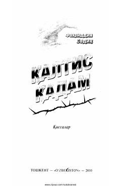

QQFaxriddin Sodiq qalamiga mansub qissalar to'plami.
Ushbu kitob Faxriddin Sodiq qalamiga mansub qissalardan iborat to'plamdir. Asarlarda insonning ichki dunyosi, hayotiy savollar va ularga izlanayotgan javoblar badiiy tilda yoritib berilgan.